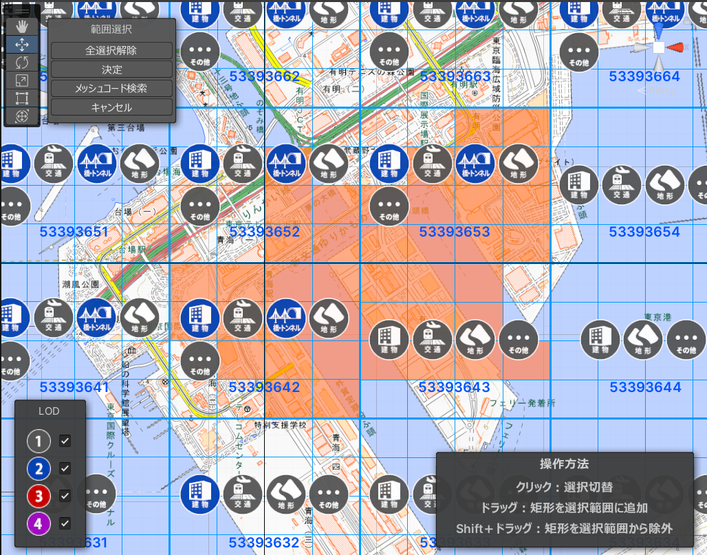

都市モデルのインポート
このページでは、都市データをUnityプロジェクトにインポートする手順を説明します。
準備
- PlateauSDK を導入したUnityプロジェクトを用意します。
SDKの導入方法は インストール を参照してください。
インポート手順
インポート元の選択
- Unityのメニューバーから
PLATEAU → PLATEAU SDKを選択します。
表示されるウィンドウの上部に3つのタブ「インポート、モデル調整、エクスポート」があります。
このうちインポートを選択します。
- インポート先で
ローカルまたはサーバーを選択します。
Note
今のところ、「サーバー」ではなく「ローカル」を推奨します。
すみませんが、現状ではサーバーで利用できるデータは少ないためです。
今後サーバー上にデータを整備していく予定です。
ローカルからインポートする場合
- 導入したい都市データが自分のコンピュータにある場合はローカルを選択します。
3D都市モデルは G空間情報センターのPLATEAUポータルサイト からダウンロードできます。
CityGML形式のものをダウンロードしてください。参照ボタンを押します。都市データのフォルダの選択画面が表示されます。- 都市データのフォルダの中には、
udx,codelistsという名前のフォルダがあるはずです。udxから階層が1つ上のフォルダを選択します。
サーバーからインポートする場合
サーバーでは、PLATEAUのデータサーバーから直接 都市データをインポートできます。接続先設定を開くことができますが、設定しなくとも自動でデフォルトのURLに接続されます。
別のURLに接続したい場合のみ、URLを入力して「再接続」ボタンを押してください。認証トークンは Bearer認証のトークンです。
データセットの選択で都道府県を選択します。- するとその都道府県に対応する
データセットが選択肢に出てくるので選びます。
基準座標系の選択
リストのうち、都市が属する場所として近いものを選択します。
適切なものを選ぶと座標の誤差が小さくなります。
ここで選択する座標系は国土交通省が定める平面直角座標系に準拠しています。
詳しくは 国土地理院のWebサイト「わかりやすい平面直角座標系」 をご覧ください。
インポート範囲の選択
範囲選択ボタンを押します。- 現在のUnityシーンに変更がある場合、変更を保存するかどうかを尋ねるダイアログが表示されます。
SaveまたはDon't Saveをクリックします。
- シーンビューの表示が切り替わり、範囲選択画面になります。 
- 範囲選択画面の操作方法：
- マウスホイールを上下に回してズームアウト、ズームインします。
- マウスホイールを押し込んだままドラッグしてカメラ移動します。
- オレンジ色の球体をドラッグして範囲を選択します。
- シーンビュー左上の
決定ボタンを押して範囲を確定します。すると元のシーンに戻ります。
- 画面のみかた：
- 青色の線は利用可能な地域を示します。
- 地域ごとに利用可能なGML種別と対応LODがアイコン形式で表示されます。
- 地図は国土地理院のサイトから自動でダウンロードされて表示されます。インターネットへの接続が必要です。
Note
範囲選択画面では、通常はガイド線が格子状に並び、地図は隙間無く表示されます。
しかし、座標系の選択を誤ると、下図のようにガイド線の配置が歪み、地図に隙間ができます。
 これは誤った座標系を選択したことによる座標計算の誤差が可視化されたものです。
これは誤った座標系を選択したことによる座標計算の誤差が可視化されたものです。
球体の地球を平面の地図で表現する都合上、基準座標点から離れるほど座標計算の誤差は大きくなります。
- 範囲選択が完了すると、
範囲選択ボタンの下に範囲選択:セット済という表示がなされ、
その下に地物別設定が表示されるようになります。
- 補足:
地域の区分を確認したい時は、ローカルにダウンロードしたフォルダに付属しているindexmapという名前のpdfファイルをご覧ください。
下図のように地図上に区分が記載されています。
地物別設定
地物の種類ごとにインポートに関する設定を行います。
設定項目について:
インポートする- チェックが付いている地物タイプのみインポートします。
Mesh Collider をセットする- チェックが付いている場合、各モデルに Mesh Collider が追加されます。
テクスチャを含める- テクスチャが存在する地物タイプで表示される設定項目です。
チェックが付いていて、かつテクスチャがある場合はそれを含めてインポートします。
都市データによってはテクスチャがない場合があり、
その場合はチェックを外した時と同様に真っ白な3Dモデルが出力されます。
- テクスチャが存在する地物タイプで表示される設定項目です。
LOD描画設定- 複数のLODを利用可能な地物タイプで表示される設定項目です。
バーの左端と右端をドラッグして、インポートするLODの範囲を指定できます。
- 複数のLODを利用可能な地物タイプで表示される設定項目です。
Note
LODとは
gmlファイルの中には、都市モデルの形状の細かさを指定したいという需要に対応するため、
複数の形状データが格納されている場合があります。
LOD0がもっとも大雑把な形状で、LOD1, LOD2 と数字が上がるほど細かい形状になります。
建築物の場合、LOD0 は平面、LOD1は平面に一定の高さを付けたもの、LOD2はより細かい形状です。
モデル結合主要地物単位（建築物,道路等）- モデルのメッシュは建物ごとに結合されて出力されます。
- 建物ごとに地物データを取得できるようにしたい場合はこちらを選択します。
最小地物単位（壁面,屋根面等）- 屋根、壁単位など非常に細かくオブジェクトを分けたい場合はこちらを選択します。
地域単位- モデルのメッシュは結合されて出力されます。
- オブジェクト数を削減して軽量化できますが、建物ごとの地物データは取得不可になります。
- メッシュの結合はある程度の大きさの範囲ごとに行われます。
Note
地物の選択について
地物の中にはインポートに時間がかかるものもあるのでご注意ください。
例えば 土地起伏 はデータの範囲が 10km × 10km と非常に広く、
データ容量が重く処理に時間がかかるのでご注意ください。
Note
現実の景観と異なる地物について
地物の種類で「土地利用」と「災害リスク」については、
情報の範囲を示す目印として白い板の3Dモデルが表示されます。
この白い板はリアルな景観のみを求める際には不要になるので、
土地利用と災害リスクに関するデータが不要な場合は
インポートしないか、インポート後オフにすることを推奨します。

上図は白い板として現れる災害リスク範囲の目印です。
Note
道路の高さについて
LOD1 の道路は、PLATEAUの仕様上、高さのデータを含みません。
したがって、インポートするとすべて高さ 0 で表現されます。
LOD2 以上の道路は高さが反映されます。
基準座標系からのオフセット値の設定
3Dモデルの原点をどこに置くかを指定します。
デフォルト値として、範囲選択画面で選択した範囲の中心が自動入力されるので、
このままの値でインポート可能です。
3Dモデルの原点位置を調整したい場合のみ値を編集してください。

値の意味:
上のインポート設定で選択した「基準座標系」の原点から、
東西・南北・高さ方向にそれぞれ何メートルの地点を3Dモデルの原点とするかを表します。
基準座標系の原点は次の国土地理院のWebサイトで示されます:
国土地理院のサイト
インポートの実行
モデルをインポートボタンを押します。- ウィンドウを下にスクロールすると、インポート処理の進捗が表示されます。

- 処理が進むと、都市のオブジェクトが順次シーンに配置されていきます。
進捗表示がすべて「完了」になったらインポート終了です。
Note
インポート元となる都市データは Assets/StreamingAssets/.PLATEAU にコピーされます。
.PLATEAU は隠しフォルダである点にご注意ください。Unityのインポート処理を削減する目的でこうなっています。
なお、インポート対象として選択したものに関連するもののみがコピーされます。
Note
インポートされた都市モデルは、プレハブ化するとメッシュとテクスチャが missing になってしまいます。
データはシーンに埋め込まれているためです。
プレハブ化またはモデルとテクスチャを別ファイルに分けたい場合は、エクスポート機能を利用して別ファイルに書き出してください。
配置されたゲームオブジェクト階層のトップには、コンポーネントPLATEAUInstancedCityModel がアタッチされます。
このインスペクタから緯度、経度などの情報を確認できます。
エラーログの確認
インポートの結果、計算状況ウィンドウの内容がすべて「完了」となれば良いですが、
ロードできなかったgmlファイルに関しては「失敗」と表示されます。
そのような場合でも、一部のgmlファイルのロードが成功していれば、そのgmlに関しては正常にインポートされています。
失敗の場合は Unityのコンソールにエラーログが出力されます。